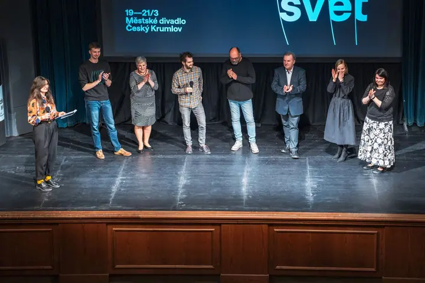
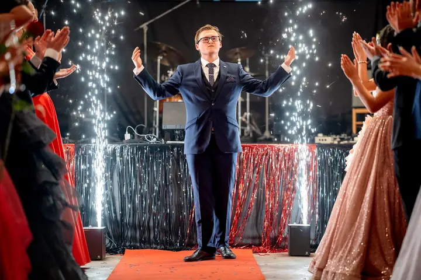
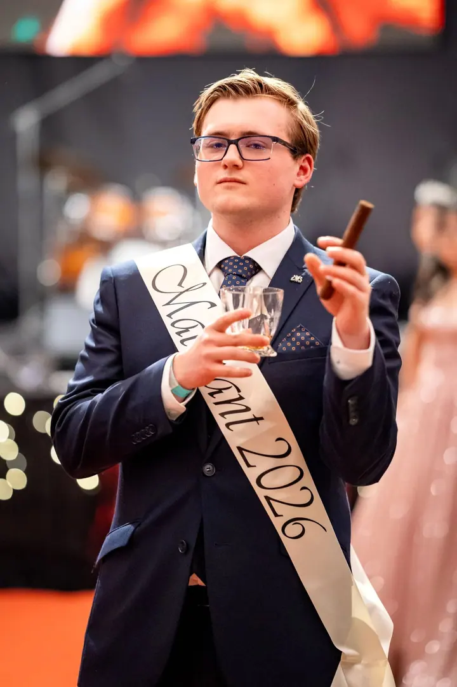

01 / 03
Svatby
Fotím celý svatební den od příprav přes obřad, skupinové focení a tanec až po večerní zábavu. Zachytím všechno, co se na svatbě bude dít.
Zeptat se na termín→





Fotky, ve kterých zůstane atmosféra
Zeptat se na termín →(01) Ahoj
Jmenuji se David Štěpán a fotím svatby , koncerty a eventy i maturitní plesy . Nejradši mám akce od lidí pro lidi, kde se všichni smějí, mluví a baví. Fotím reportážně a nenápadně, aby atmosféra zůstala opravdová.
(02) Co fotím
01 / 03
Fotím celý svatební den od příprav přes obřad, skupinové focení a tanec až po večerní zábavu. Zachytím všechno, co se na svatbě bude dít.
Zeptat se na termín→02 / 03
Koncerty, přednášky, výstavy i firemní večírky fotím reportážně. Snažím se být co nejméně vidět a přitom doručit fotky, které vypráví příběh vaší akce.
Zeptat se na termín→03 / 03
Šerpování, nástupy na pódium, tanec i celou plesovou atmosféru. Fotky, na které budete se spolužáky rádi vzpomínat.
Zeptat se na termín→(03) Portfolio
Kliknutím fotku zvětšíte · fotografie jsou ilustrační
(04) Postup
Od první zprávy po hotovou galerii.
Krok 1 z 4
Napište mi nebo zavolejte, o jakou akci jde, kdy a kde se koná. Ověřím termín a domluvíme se na rozsahu.
Krok 2 z 4
Před svatbou se osobně potkáme a projdeme harmonogram dne. U eventů si ujasníme, co je pro vás na akci nejdůležitější.
Krok 3 z 4
Fotím reportážně a snažím se být co nejméně vidět. Svatbu fotím zhruba 12 hodin, obvykle od 9 do 21 hodin.
Krok 4 z 4
Upravené fotky vám předám přes online galerii. Ze svatby dostanete víc než 500 fotek už do druhého dne.
Akce od lidí pro lidi
(05) Za objektivem
Focení se věnuji několik let. Z koníčku se postupně stala vysněná práce, a tak jsem se rozhodl odejít ze školy a jít si za svým snem.
Zbožňuji atmosféru akcí, kde jsou lidé spolu a užívají si to. Ať jde o svatbu, ples, koncert nebo firemní večírek, snažím se být co nejméně vidět a zachytit akci takovou, jaká opravdu byla. Pokaždé jsem vděčný, že tu jedinečnou atmosféru můžu fotit.
Moje fotky nemají být jen hezké obrázky. Mají to být vzpomínky, ke kterým se rádi vrátíte s kamarády, s rodiči a prarodiči, nebo jen tak sami při dlouhé chvíli.
David
David Štěpán · Svatební a eventový fotograf
Balíček Svatební den vychází na 25 000 Kč. V ceně je osobní schůzka, zhruba 12 hodin focení, cesta po celé ČR a víc než 500 upravených fotek v online galerii.
Podle délky a rozsahu akce od 8 000 Kč do 25 000 Kč. Napište mi, co pořádáte, a pošlu vám přesnou nabídku.
Ano, focení maturitního plesu začíná na 10 000 Kč. Nafotím šerpování, nástupy i zábavu během celého večera.
Víc než 500 upravených fotek vám pošlu přes online galerii do druhého dne po svatbě.
Fotím reportážně a snažím se být co nejméně vidět. Hosté se mají bavit, ne pózovat.
(07) Kontakt
Napište pár vět o tom, co si představujete, a termín, který se vám hodí.